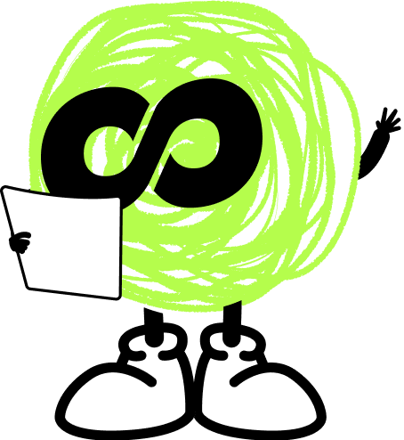
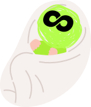

あなたのことを教えてください。答えに合わせて、最後のプランが変わります。
왜 한국어를 배우고 싶어요? 여러 개 골라도 돼요.どうして韓国語を学びたいですか？いくつ選んでも大丈夫です。
한국어로 뭘 할 수 있게 되고 싶어요? 하나만 골라 주세요.韓国語で何ができるようになりたいですか？1つだけ選んでください。
일주일에 수업을 몇 번 받고 싶어요?1週間に何回、レッスンを受けたいですか？
今日のレッスンと、選んでもらった答えから作ったレポートです。
오늘 수업을 보고, 지금 레벨을 골라 주세요. 대부분 1이에요.
항목별로 다르면 여기서 조정해 주세요. 안 고치면 종합 레벨을 따라가요.

한글을 하나씩 읽어요
오늘 수업에서 본 다섯 가지를, 다른 분들과 나란히 놓고 봤어요.